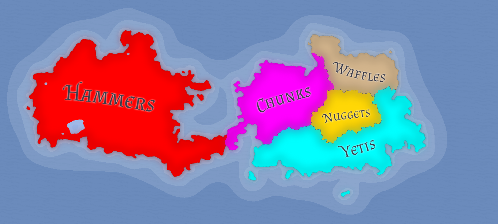

After roughly 400 years of rule by dictatorship, you have successfully gathered the backing of all 5 Lassian Colonies (shown in the image below) and broken free from the reign of the North Wollypog Empire!
Now that the Lassian Colonies are a free people, they have some decisions to make. They would like to form a united nation after just winning the war together... but they are not without their differences...
Lassians are a diverse group of people, made up of different cultures and motivated by different interests and ways of living. Each colony sports a different dynamic. If a colony doesn't like the way their newfound nation is heading, they will not shy away from breaking off to form their own separate entity.
Following your heroic effort in rallying the colonies towards independence, they unanimously nominate you to lead the charge in constructing a future foundation for this new society. They trust you. For now...
Learn about the Colonies